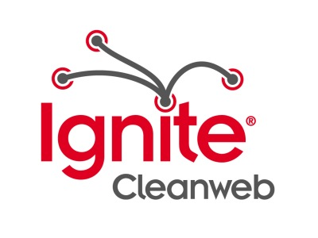

On Thursday 13th September 2012, Cleanweb UK held our first Ignite evening in London, hosted by Forward Technology! We had a great selection of lightning talks covering the whole range of cleanweb activity in the UK. If you couldn’t make it, never fear - you can watch all the videos online right now:
-
Jon Leighton
Loco2 vs The European Rail Booking Monster
-
Ed Dowding
Good Food, For Everyone, Forever. Easy, Right?
-
Trystan Lea
The OpenEnergyMonitor Project
-
Chris Adams
Weaponising Environmentalism
-
Paul Tanner
Energy Saving Behaviour - The Motivation Challenge
-
Robin Houston
The Carbon Map
-
Vinay Gupta
Love Thy Neighbour. Rent Their Car
-
Luke Nicholson
Carbon Culture
-
Jack Townsend
Putting the Local in Global Warming with Open Data
-
Jason Neylon
Solar Panels Cross The Chasm
-
Gavin Starks
The Open Data Institute
-
James Smith
Cleanweb in the UK